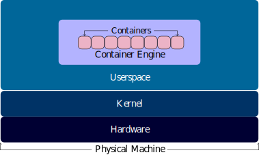

In order for applications to run on cloud platforms such as OpenShift, they must be containerized. Moreover, these applications must be rewritten, generated, or transported into isolated programming environments known as containers. A container is essentially an isolated userspace containing its own read/write filesystem, processes, network ports, and libraries. By relying on the functionality of their host’s kernel, containers save on resource costs, earning the trait of being ”lightweight”.

With little expense, containers can be instantiated, snapshotted, and destroyed quickly. Moreover, containers are ideal for developing applications. By providing applications with their own isolated programming environment, containers help users avoid problems like dependency and networking collisions. Accidentally downloading conflicting libraries or necromancing zombie network ports need not result in tedious environment debugging when developing in a container. Remember, containers are inexpensive, they can be destroyed and then recreated on a whim.
One can manage these virtual userspaces using the container interface application known as Moby. Moby uses features built in the kernel to organize, isolate, create, save, and destroy containers. Friends running Moby on their machine can easily share their applications with other friends running Moby. These packaged applications not only deliver the same executing code of the developer but also the same environment that executing code was running in. All libraries and environmental variables are installed and ready to go. This way, more time can be spent creating the application as opposed to debugging environmental infestations.
In contrast to virtual machines, containers are classified under operating system level virtualization because they rely on the operating system resources of their host machine. Virtual machines rely on hardware virtualization which has a higher virtual memory management cost than operating system virtualization. Intuitively, this makes sense. It is more expensive to replicate the hardware and operating system for a virtual machine than it is to instantiate an isolated userspace for a container. Although containers provide less isolation than virtual machines, they consume significantly less resources. This is why containers are viewed as being ”light weight”. In fact, it is even possible for a single physical machine to host hundreds containers simultaneously.
—————————————————————————————————-
WIP
—————————————————————————————————-